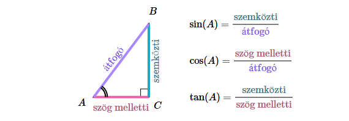

1. rész: Bevezetés
A trigonometria a matematika egy ága, mely a geometriában a háromszögek oldalai és szögei közötti összefüggésekkel, az analízisben az őket leíró trigonometrikus függvényekkel foglalkozik. A trigonometria feladatai közé tartozik ezek tulajdonságainak vizsgálata és az ezeken alapuló számítások. A gömbi háromszögeket a gömbi trigonometria írja le. A gömbi szögfüggvények is a szögfüggvények közé tartoznak; ugyanúgy elemzik és felhasználják őket, mint a többit. A hiperbolikus geometriából származtathatók a hiperbolikus szögfüggvények.
Két derékszögű háromszög hasonlóságát teljesen meghatározza egyik hegyesszögük nagysága. Ha az egyik hegyesszög mindkét háromszögben egyenlő (ekkor a másik hegyesszögük is egyenlő egymással) , akkor hasonlóak, így oldalaik aránya megegyezik. Ha az egyik háromszögben bármelyik két oldalhosszt elosztjuk egymással, a hányados ugyanakkora, mint a másik háromszög megfelelő két oldalhosszának hányadosa. Ezeket az arányokat hagyományosan az ismert (például α szög) szögfüggvényeivel írják le:
2. rész: Alapfogalmak
- sinα=
- cosα=
- tanα=
Szinusz függvény:
- A szinusz függvény grafikonja hullámzó alakú, amit szinuszgörbének nevezünk.
- Az értékei -1 és 1 között mozognak, és a periódusa 2𝜋
- A szinuszgörbe a 0 pontból indul, először nő, majd csökken, és ezt ismétli végtelenül.
Koszinusz függvény:
- A koszinusz függvény grafikonja is hullámforma, hasonló a szinuszgörbéhez, de el van tolva balra 𝜋/2-vel.
- Az értékei -1 és 1 között mozognak, és a periódusa 2𝜋
- A koszinusz függvény a maximális értékről (1) indul, majd lecsökken -1-ig, és így ismétlődik.
Tangens függvény:
- A tangens függvény grafikonja ismétlődő, de nem hullámzó, hanem meredeken emelkedő szakaszokból áll.
- Minden 𝜋/2+𝑘𝜋 helyen (k egész szám) függőleges aszimptotája van, mert ott nem értelmezett.
- A függvény periódusa π, és nincs alsó-felső határa – értékei a −∞ és ∞ között mozognak.
Kotangens függvény:
- A kotangens függvény görbéje hasonlít a tangenshez, de fordított irányban halad, azaz csökkenő
- A kotangens minden kπ helyen nem értelmezett, ezeknél a pontoknál aszimptotája van.
- A periódusa szintén π, és értékei a −∞ és ∞ között változnak.
3. rész: Video